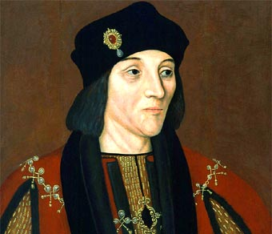

Enrique Vll
(Castillo de Pembroke, 1457 - Richmond, Londres, 1509) Rey de Inglaterra (1485-1509).
Hijo de Edmundo Tudor y de Margarita Beaufort, de la Casa de Lancaster, fue el iniciador de la dinastía Tudor.
Subió al trono tras derrotar a Ricardo III en la batalla de Bosworth (1485), que puso fin a la Guerra de las Dos Rosas.
Su reinado, durante el que reforzó el poder de la corona sobre la nobleza, conforme al modelo de las monarquías autoritarias,
marcó el inicio de un periodo de paz y prosperidad,
después de los interminables conflictos del siglo XV.

VII de Inglaterra
El futuro Enrique VII de Inglaterra tuvo una juventud muy azarosa por el recelo que su condición de representante de los Lancaster despertaba en la casa rival de York, entonces reinante. Tal suspicacia se acentuó durante el breve y agitado mandato de Ricardo III de Inglaterra (1483-1485), ante cuya actitud el joven Enrique hubo de exiliarse a Bretaña y más tarde a Francia, donde se mostró decidido admirador de Luis XI de Francia.
Regresado a Inglaterra, Enrique VII venció a Ricardo III en la célebre batalla de Bosworth (agosto de 1485),
en la que el mismo Ricardo perdió la vida; era el último acto de la Guerra de las Dos Rosas,
que había ensangrentado Inglaterra por espacio de más de treinta años.
Enrique fue reconocido inmediatamente por el Parlamento (noviembre de 1485), aunque, contrariando los deseos del joven monarca,
sus miembros se abstuvieron de pronunciarse respecto a su legitimidad.
Comprendiendo la fragilidad de su poder en un país dominado en casi su total extensión por los grandes señores feudales,
que lo consideraban como un advenedizo al que únicamente habían apoyado por su odio contra el antiaristocrático Ricardo III,
Enrique VII dedicó los años iniciales de su mandato a una intensa labor de restañamiento de la conciencia nacional,
en la que ejercitó sus grandes talentos diplomáticos y en la que alternó, con rara eficacia,
la firmeza con la clemencia y el tacto con la audacia.
Su obra pacificadora pareció concluir al casarse con la princesa Isabel, hija de Eduardo IV de Inglaterra,
monarca de la casa de York que había reinado desde 1461 hasta 1483. De esta forma pudo Enrique VII, el primer Tudor,
ostentar en su escudo las rosas blanca y roja. Pero pese a haber unido mediante este matrimonio las casas de York y Lancaster,
durante la primera década de su reinado se produjeron dos tentativas de restablecimiento de la casa de York,
encabezadas por sendos impostores (Lambert Simnel y Perkins Varbeckque) que pretendían ser príncipes de aquélla.
Prontamente sojuzgadas, dichas revueltas acentuaron, no obstante,
el carácter receloso del monarca y sus sospechas respecto a la alta nobleza,
que más o menos encubiertamente había protegido las fracasadas intentonas.
Después de casi medio siglo de guerra civil, Enrique VII de Inglaterra supo encarnar en su persona las aspiraciones
y deseos pacíficos de su pueblo, logrando identificar el bienestar y la seguridad con la naciente dinastía. De ahí que,
a lo largo de un reinado de un cuarto de siglo, las empresas militares y expansionistas fueron muy reducidas,
aunque no por ello el primer Tudor renunció a los pretendidos derechos ingleses sobre la corona francesa.
El acendrado sentimiento francófobo de sus súbditos le impondría, sin embargo, una esporádica participación
en la lucha de Bretaña y el Sacro Imperio Romano Germánico contra Carlos VIII de Francia. Poco después,
por el Tratado de Étaples (noviembre de 1492), Enrique VII acordaba la paz con su adversario. Antes de tal acontecimiento,
el monarca inglés había visto reforzados su autoridad y prestigio internacionales merced a su alianza con los Reyes Católicos,
cuya cláusula más importante acordaba el matrimonio de la infanta española Catalina de Aragón con el heredero inglés,
el príncipe Arturo.
Aunque Enrique VII mantuvo en todo momento atenta mirada hacia la política continental,
los mencionados tratados diplomáticos clausuraron su actividad en este sentido, centrando a partir de entonces su actividad en
la consolidación de su dinastía, que creyó siempre insegura. Receloso ante el Parlamento,
sólo lo convocó en seis ocasiones muy señaladas durante su dilatado reinado; el monarca extrajo los recursos necesarios para
la financiación de su política de la explotación de las propiedades de la corona, de los ingresos aduaneros,
de las elevadas multas que impuso a sus adversarios y de empréstitos.
El celo y la tenacidad desplegados por Enrique VII por lograr, al margen del Parlamento, la fuerza económica,
hizo que el tesoro real inglés fuese a fines del reinado el más acaudalado de toda la cristiandad, estimándose en la suma
(fabulosa para la época) de más de un millón de libras. Independizada así su obra de la fiscalización del órgano parlamentario,
el primer Tudor pudo llevar a cabo una reestructuración casi completa del sistema administrativo y de la máquina burocrática de la corona.
Las metas, el carácter y la originalidad de esta tarea son objeto aún de discusión entre los historiadores de las instituciones
británicas. Para algunos, la tarea acometida y rematada con todo éxito por el iniciador de la dinastía Tudor tiene como notas
dominantes la singularidad y la innovación. Según otra corriente, la obra de Enrique VII sólo puede ser enfocada, para su exacta
comprensión, desde una perspectiva medieval, constituyendo así su reinado la clausura de un ciclo institucional
(abierto tiempo atrás por los Plantagenet) que tendió a reforzar el poder real sin alterar fundamentalmente
el dualismo monarquía-parlamento
que había presidido, y seguiría presidiendo, la historia constitucional inglesa.
Sea como fuere, el gobierno de Enrique VII marcó un jalón capital en la plasmación insular de la monarquía autoritaria.
El eje que articuló y sobre el que giró toda su tarea fue el Consejo Privado, en el que, a tono con las corrientes que informaron
la estrategia gobernante de otros reyes europeos de la época, dio entrada a un gran número de elementos procedentes del estamento
popular, que privaron así a dicha institución del monopolio nobiliario y eclesiástico que hasta entonces la había caracterizado.
Al acercarse el fin de su reinado, los miembros de la casa de York reagruparon sus fuerzas a la espera de una posible restauración.
Para contrarrestar su acción, Enrique VII decretó un indulto general de sus deudores, con lo que aumentó la popularidad de su dinastía.
El 21 de abril de 1509 moría en el palacio de Richmond;
le sucedió el célebre Enrique VIII de Inglaterra, segundo de sus hijos.